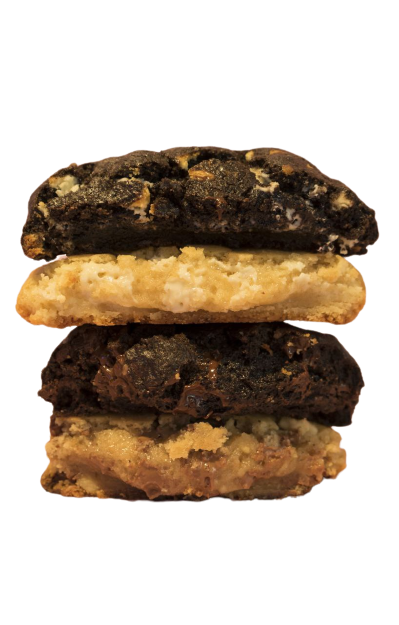

In America, a cookie is described as a thin, sweet, usually small cake. By definition, a cookie can be any of a variety of hand-held, flour-based sweet cakes, either crisp or soft. Each country has its own word for “cookie.” We know as cookies are called biscuits in England and Australia, in Spain they’re galletas. Germans call them keks or Plzchen for Christmas cookies, and in Italy there are several names to identify various forms of cookies including amaretti and biscotti, and so on. The name cookie is derived from the Dutch word koekje, meaning “small or little cake.” Biscuit comes from the Latin word bis coctum, which means, “twice baked.”
Ingredients
Instructions